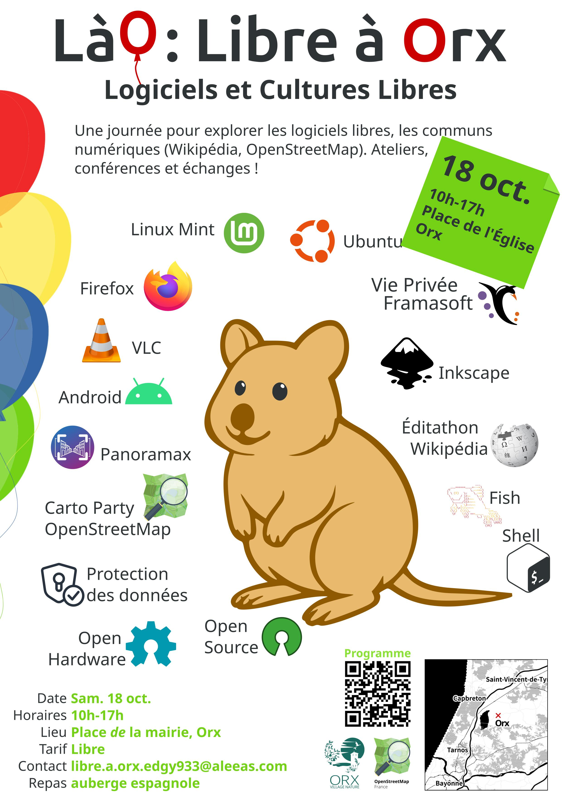

🎈 LàO : Libre à Orx
Où ?
Place de l'Église, Orx, Landes
Quand ?
Samedi 18 oct. 10h-17h
Mail :
libre.a.orx.edgy933@aleeas.com
Réseau Sociaux :
Mastodon
Tarif :
Libre
Programme :
Voir ci-dessous ⬇
Repas :
Auberge Espagnole (chacun apporte un plat à partager)
💖 :
Code de conduite
Programme
{{ selectedEvent.title }}
{{ selectedEvent.start && selectedEvent.start.formatTime() }} → {{ selectedEvent.end && selectedEvent.end.formatTime() }}
Description
Animer par
Affiche

Remerciements
L’organisation de cet événement est possible grâce :
au financement de l’
association OpenStreetMap France
;
au soutient de la
mairie d’Orx
;
à l’investissement de nombreux bénévoles.